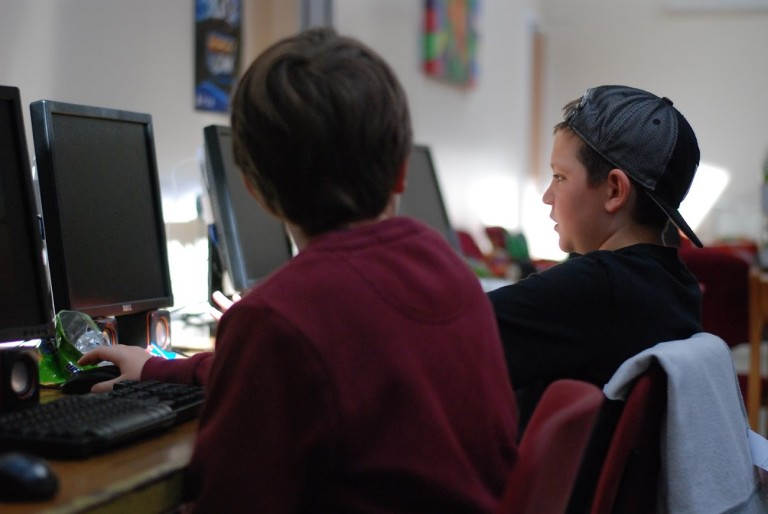
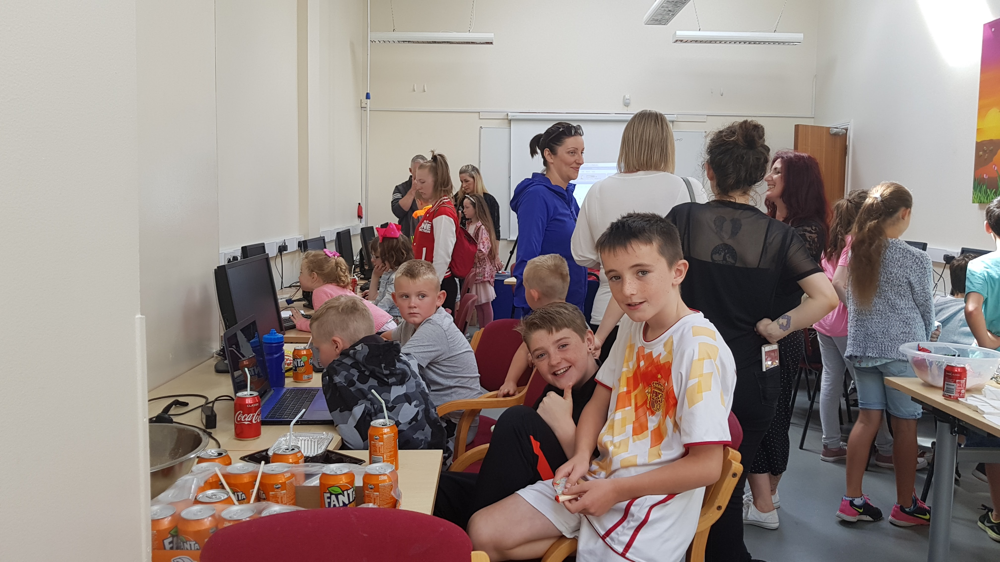

GameLab 2.1
Thanks to everyone that joined us for our second adventure into coding in Huntstown Community Center. Places were gone extremely quickly again this year, we may have to see about going bigger next year.
I would like to thank all the children that attended and all the parents that brought them, without young minds to ask questions there is no summer camp. The standard this year was incredible, with some returning children and some new faces it was nice to see new friendships forming. I would also like to thank the community center for their support and guidance in this next chapter in our mission to bring coding and computer science to kids everywhere.
Lastly I would like to thank our supporters for there help, Tesco Ireland, Riot Games, IT Blanch, Fingal county council and Huntstown community center. Check our facebook and twitter for more info on upcoming camps.